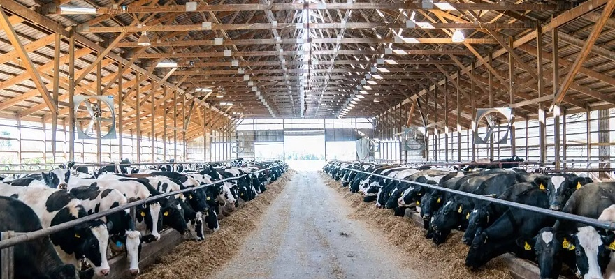

Cattle Management, Handling, Facilities Design, and Transportation in Beef Cattle
Stress is a major factor that influences the susceptibility of cattle to disease. As a consequence of this, how and when certain management practices are conducted can have a substantial impact on cattle health. Heat and cold stress are also capable of impacting immune function and therefore can result in adverse health outcomes. Care should be taken to avoid, minimize, or alleviate stressors whenever possible.dolore.
Aside from birth, weaning is one of the most stressful events that a calf will experience. Weaning is stressful because the calf is removed from its dam and has to adjust to a different diet and environment, along with potentially unfamiliar animals, which increases the potential for pathogen exposure and disease transmission. Management procedures should aim to minimize stress to calves throughout the weaning process.
Preconditioning is a process that prepares feeder calves for marketing, transportation, and the feedlot environment. This process typically includes weaning, administration of certain vaccines, deworming, castration, and training calves to eat from a feed bunk and drink from a water trough in a pen. The concept of preconditioning is based in part on immunologic and nutritional principles.
Preimmunization and Precondition.
Preimmunization, or vaccination of calves before shipment from the ranch to the feedlot, and its positive effect on health and performance throughout the feedlot finishing phase established the basis for developing formal preconditioning programs. In addition to vaccination, more recent efforts have been directed toward increasing the number of days calves are weaned before marketing, as well as improved cow-calf management procedures on the ranch, such as genetic selection and nutrition, that assist calves in making an easier transition to the feedlot environment. Preconditioned calves typically withstand the stress associated with marketing, commingling, and transportation much better than calves that have not been weaned and preconditioned. Preconditioned calves typically begin to eat and drink much more quickly and experience less morbidity and mortality.
Premiums associated with preconditioning are typically $5 to $10 per 45 kg (100 lb) if calves are marketed appropriately. I
Backgrounding and stockering serve as intermediate production phases between weaning and finishing where calves are grown over an extended period of time on pasture (stockering) or in a dry lot (backgrounding). Backgrounding or stockering is another strategy often used to achieve objectives similar to preconditioning; however, it generally occurs over a longer period of time (> 63 days). Nonetheless, not all calves will be weaned and preconditioned before sale, which increases the risk of morbidity and mortality. As such, these calves typically require different, more intensive management than lower-risk calves require throughout the first few weeks after arrival.
An understanding of the principles underlying the nutrient requirements and nutritional management of cattle is critical to ensuring that nutrition does not limit immune function. Gestational nutrition of the dam has lasting implications for calf health through its impact on both the quantity and quality of colostrum available to the newborn calf. Nutrient-restricted cows are expected to provide less and lower-quality colostrum to their calves. Because colostrum is the means through which the newborn calf's immune system is populated with antibodies, gestational nutrition of the dam can have a major impact on calf health.